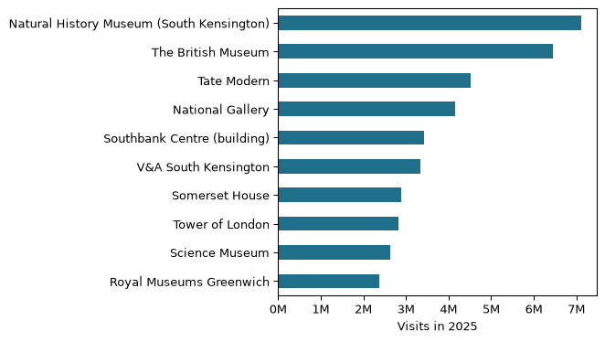
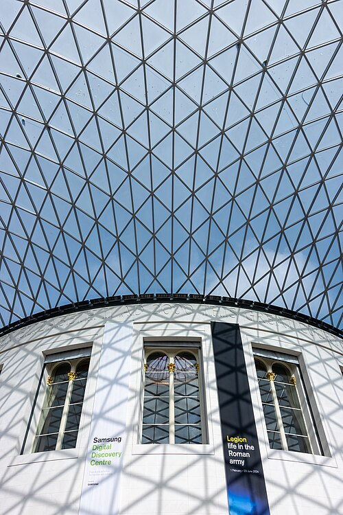
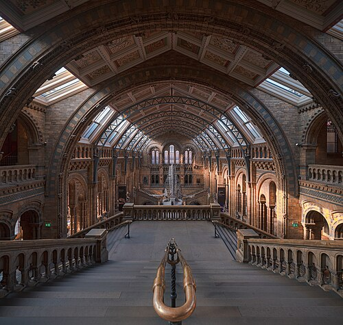
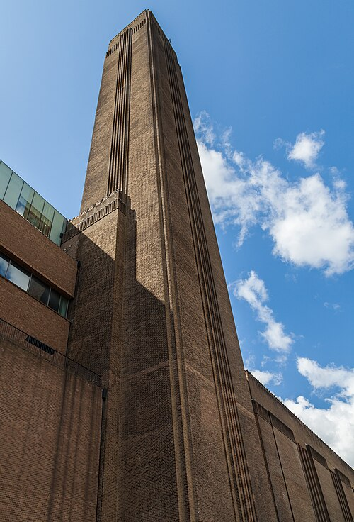
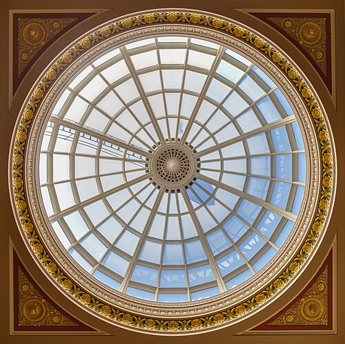

import pandas as pd
attractions = pd.read_csv("data/attractions.csv")
top = attractions.loc[attractions["visits_2025"].idxmax()]
top_name = top["attraction"]
top_visits = f"{top['visits_2025']:,}"
total_visits = f"{attractions['visits_2025'].sum():,}"Visit London
Welcome to London, a city of free museums, royal palaces and riverside walks along the Thames.
London in numbers
Most visited in 2025: the Natural History Museum (South Kensington), with 7,116,929 visits. London’s ten most visited ALVA member attractions drew 39,692,434 visits in 2025 (source: ALVA, Visits made in 2025, retrieved 2026-10-30).

Five sights to start with
- British Museum
- Natural History Museum
- Tate Modern
- National Gallery
- Tower of London
Getting around
- 🚇 Tube
- 🚌 Bus
- 🚲 Santander Cycles
Plan your visit
Plan your route with the TfL Journey Planner.

Tip from a local: many of London’s big museums have free general admission. Booking a free timed ticket online can save you time in the queue.
Sights at a glance
| Photo | Sight | Area | Price band | Nearest tube | More |
|---|---|---|---|---|---|
 |
British Museum | Bloomsbury | Free | Tottenham Court Road | Read more |
 |
Natural History Museum | South Kensington | Free | South Kensington | Read more |
 |
Tate Modern | Bankside | Free | Southwark | Read more |
 |
National Gallery | Trafalgar Square | Free | Charing Cross | Read more |
| Tower of London | Tower Hill | Paid | Tower Hill | Read more |
“Free” means free general admission; some special exhibitions charge.
Photos, via Wikimedia Commons: British Museum, Mike Peel (CC BY-SA 4.0); Natural History Museum, Julian Herzog (CC BY 4.0); Tate Modern and National Gallery, Diego Delso (CC BY-SA 4.0); Tower of London, Dietmar Rabich (CC BY-SA 4.0). Full credits: images/ATTRIBUTION.md.
Before you go
[ ] Contactless card or Oyster card
[ ] Free museum tickets booked
[ ] Comfortable shoes and an umbrella